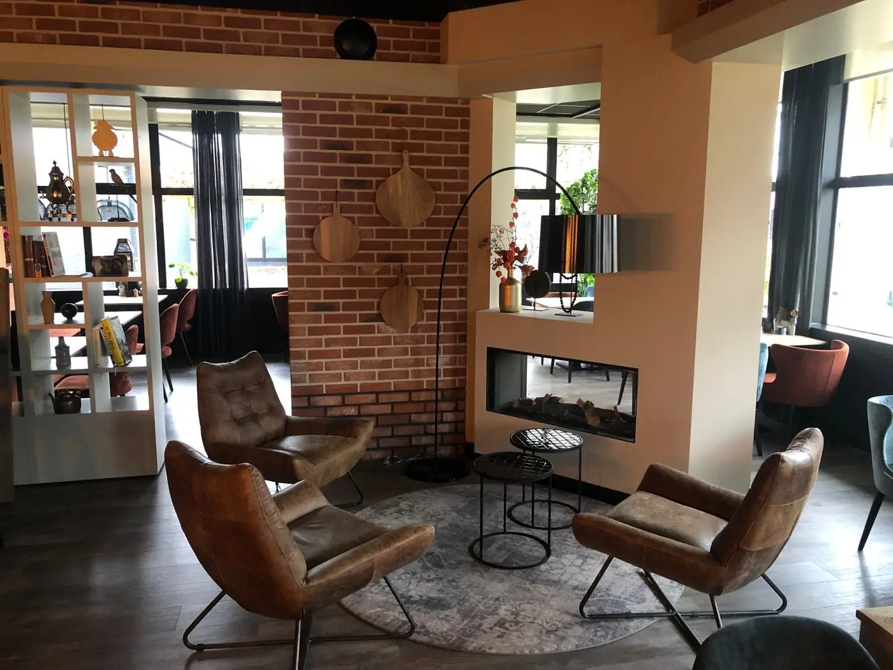

Dinerkaart
Van gamba's, carpaccio en huisgemaakte soepen tot biefstuk en vegetarische gerechten. Toe: bavarois of crème brûlée.
Dinerkaart (pdf)
Een seizoenskaart met verse, lokale ingrediënten. We werken met streekproducten van Molen De Zaandplatte in Ruinen en een zuivelboerderij uit de buurt. Bij de wijn adviseren we u graag.
Bekijk onze actuele kaarten.
Van gamba's, carpaccio en huisgemaakte soepen tot biefstuk en vegetarische gerechten. Toe: bavarois of crème brûlée.
Dinerkaart (pdf)Een ruime keuze aan lunchgerechten, binnen of op het terras aan de Brink.
Lunchkaart (pdf)Voor jong en oud, ook leuk na een fietstocht door het Dwingelderveld.
Pannenkoekenkaart (pdf)€ 35,00 p.p.
Wij serveren elke dag een vast 3-gangenmenu. Bel ons voor het menu van vandaag of om te reserveren. Komt u met een groep van 10 personen of meer, dan stellen we samen een persoonlijk 3-gangen keuzemenu samen.
Reserveren: 0522 47 12 37
Hoofdgerechten met gebakken aardappelen of verse friet, een koud bijgerecht en warme groenten.
Een verzorgd ontbijt, bezorgd op uw (vakantie)adres, af te halen of te eten in ons café-restaurant.